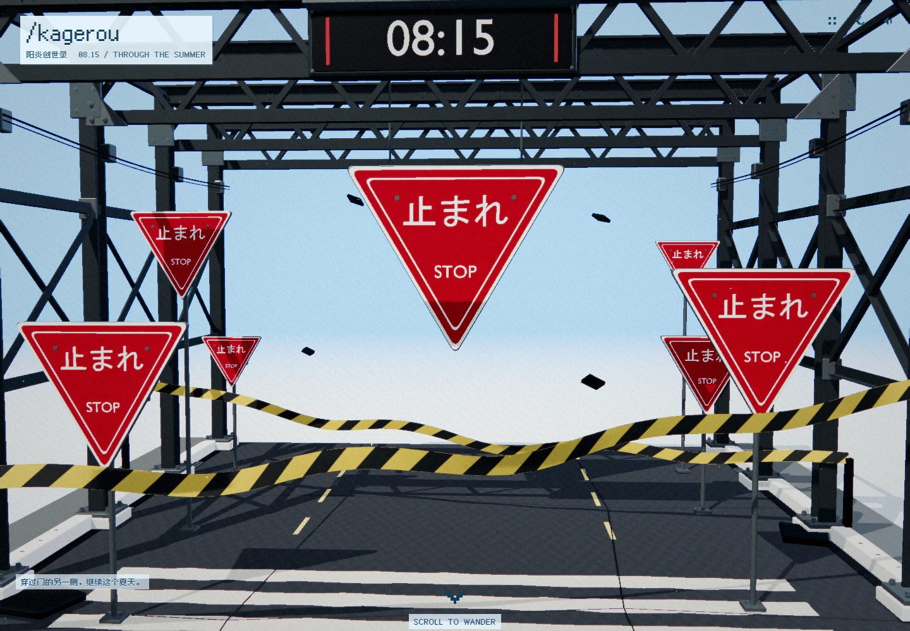

跳到个人资料

第■圣域
正在进入八月
00%
SCROLL TO WANDER
_
00 / 阳炎眩乱
01 / 关于我
02 / 小说
03 / 写作与工具
04 / 碎碎念
05 / 创世记
06 / 一些喜欢
本机草稿预览 · 尚未发布
查看发布版本
/sanctuary
−
↗
−
全部
连载
已完结
−
−
−
−
00
八月 / THE WHOLE WORLD
ARCHIVE
×
请开启 JavaScript 来浏览三维场景与内容窗口。